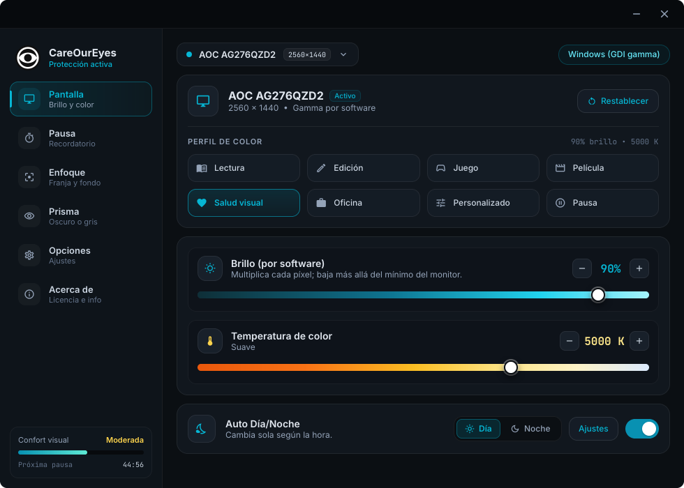
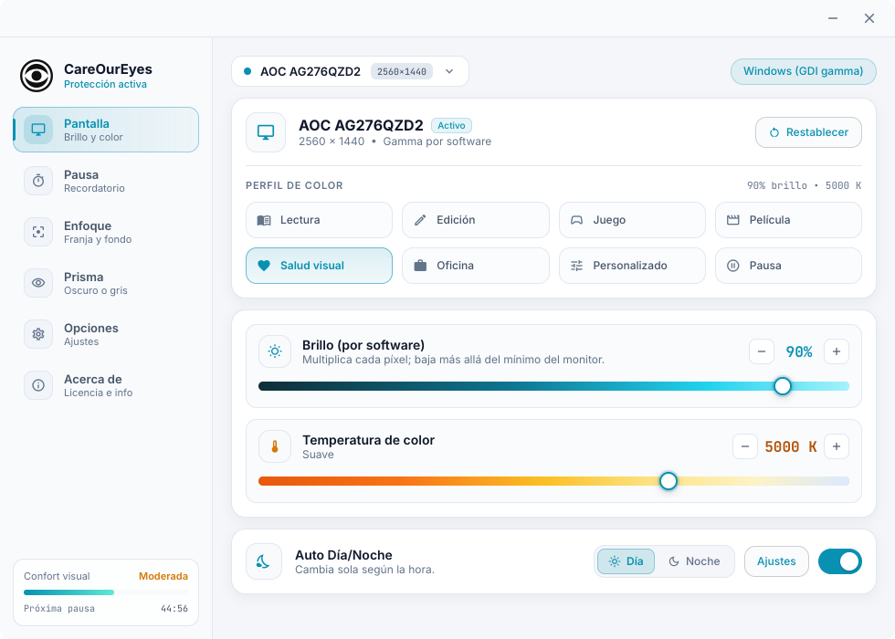
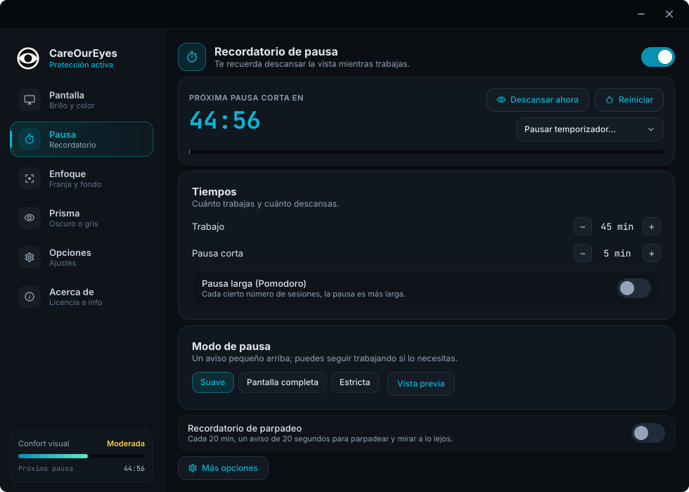
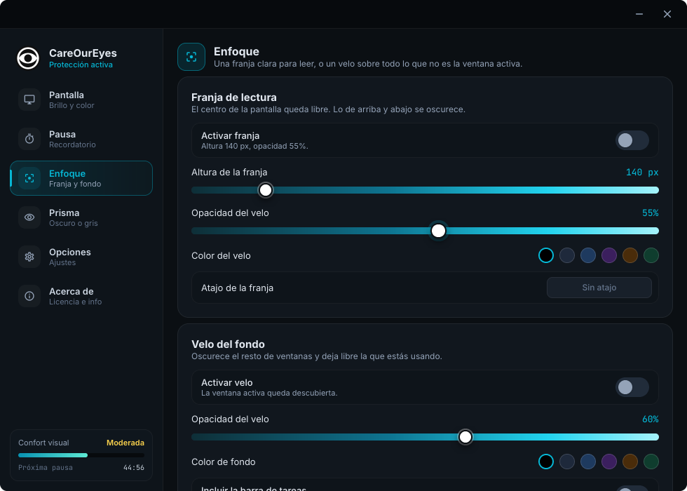

Cuida tu vista frente a la pantalla
Baja el brillo más allá del mínimo de tu monitor, calienta el color de noche y recuerda descansar la vista. Sin cuentas, sin anuncios y sin versión de pago.
Última versión: — · Windows · Linux · macOS · Otros sistemas y archivos

Todo lo que hace
Una sola app para el brillo, el color y los descansos.
Brillo por debajo del mínimo
Escala cada píxel, así que baja más que el control del monitor. Ideal para trabajar de noche.
Temperatura de color
Del blanco neutro a un tono cálido que cansa menos la vista, con transiciones suaves.
Auto Día/Noche
Valores de día y de noche que cambian solos por horario o según el amanecer y el atardecer de tu ciudad.
Perfiles por pantalla
Lectura, Edición, Juego, Película, Salud visual, Oficina… Igual en todas las pantallas o cada una por su lado.
Recordatorio de pausa
Regla 20-20-20, Pomodoro, pausas suaves, a pantalla completa o estrictas, y recordatorio de parpadeo.
Enfoque
Una franja clara para leer, o un velo que oscurece todo menos la ventana que estás usando.
Prisma
Oscurece o pone en gris una sola ventana que no tiene modo oscuro (Windows).
Atajos y reglas
Atajos de teclado globales y perfiles automáticos según el programa que tengas delante.
Capturas
Tema claro, oscuro o el del sistema, con siete colores de acento.



¿Vienes de CareUEyes, f.lux o Iris?
CareOurEyes nació como una alternativa libre a programas de este tipo. Es un proyecto independiente, escrito desde cero en Rust y Slint, y siempre será gratis.
CareUEyes, f.lux e Iris son marcas de sus respectivos dueños. CareOurEyes no tiene relación con ellos.
- Gratis de verdad: sin licencias, sin versión Pro y sin cuenta.
- Código abierto (GPL-3.0): cualquiera puede revisarlo, mejorarlo o compilarlo.
- Funciona en Windows, Linux y macOS con la misma interfaz.
- Respeta la calibración de tu monitor y la devuelve tal cual al salir.
- En 10 idiomas, con el español como idioma base.
Sistemas
Lo que funciona en cada uno.
| Función | Windows | Linux | macOS |
|---|---|---|---|
| Brillo, temperatura, perfiles y Auto Día/Noche | Sí | Sí ¹ | Experimental |
| Icono en la bandeja y arrancar al iniciar sesión | Sí | Sí | Experimental |
| Recordatorio de pausa | Sí | Sí | Experimental |
| Atajos de teclado y reglas por programa | Sí | Sí (X11) | Experimental |
| Enfoque (franja y velo) | Sí | Sí (X11) | Experimental |
| Prisma | Sí | — | — |
¹ En X11, y en Wayland con Sway, Hyprland y otros compositores wlroots. En GNOME y KDE Plasma sobre Wayland solo se puede cambiar el color (con su luz nocturna). macOS: escrito pero todavía sin probar en un Mac; agradecemos reportes.
Preguntas frecuentes
¿Es gratis de verdad?
Sí. CareOurEyes es software libre bajo la licencia GPL-3.0. No hay versión de pago, anuncios ni cuentas.
Windows avisa al instalarla. ¿Es segura?
Los instaladores no están firmados con un certificado comercial, por eso SmartScreen avisa: elige «Más información» → «Ejecutar de todas formas». Cada descarga incluye una atestación de GitHub que prueba que se compiló desde este repositorio (ver abajo).
¿Cómo compruebo que la descarga es auténtica?
Con GitHub CLI: gh attestation verify ARCHIVO -R DSGM-GMSD/CareOurEyes. También puedes comparar el SHA-256 con el archivo SHA256SUMS del release.
¿Funciona en Wayland?
Sí, con límites. En Sway, Hyprland y similares, el brillo y el color funcionan completos. En GNOME y KDE Plasma solo el color, a través de su luz nocturna. Wayland no permite atajos globales, reglas por programa ni Enfoque.
¿Y en macOS?
La versión de Mac existe pero todavía nadie la ha probado en un equipo real. No está firmada por Apple: la primera vez, ve a Ajustes del Sistema › Privacidad y seguridad y elige «Abrir igualmente». Desactiva Night Shift mientras la uses.
¿Cambia la calibración de mi monitor?
No. Al abrir guarda la tabla de color de cada pantalla, aplica los ajustes encima y al salir la deja exactamente como estaba.